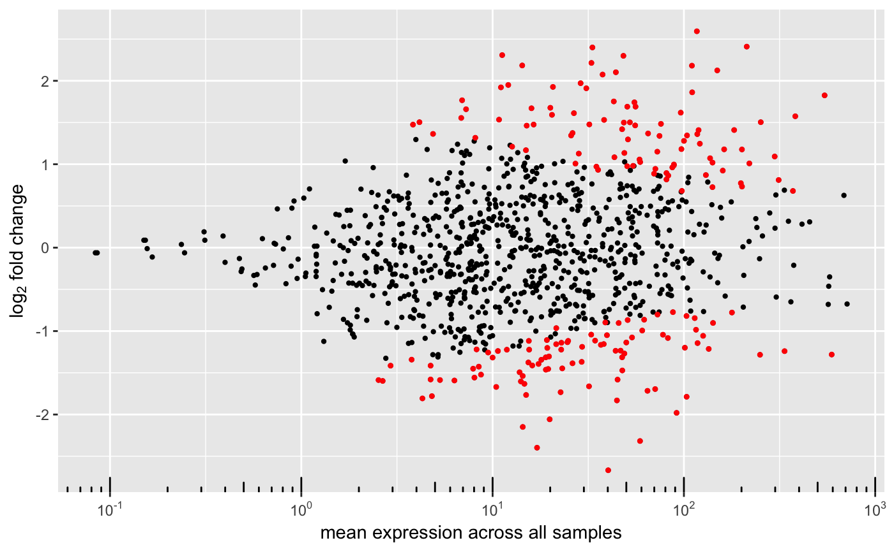

degMA.RdMA-plot addaptation to show the shrinking effect.
degMA(results, title = NULL, label_points = NULL, label_column = "symbol", limit = NULL, diff = 5, raw = FALSE, correlation = FALSE)
| results | DEGSet class. |
|---|---|
| title | Optional. Plot title. |
| label_points | Optionally label these particular points. |
| label_column | Match label_points to this column in the results. |
| limit | Absolute maximum to plot on the log2FoldChange. |
| diff | Minimum difference between logFoldChange before and after shrinking. |
| raw | Whether to plot just the unshrunken log2FC. |
| correlation | Whether to plot the correlation of the two logFCs. |
MA-plot ggplot.
#>#>#>#>#>#>#>#>#>#> #> #> #> #>degMA(res)